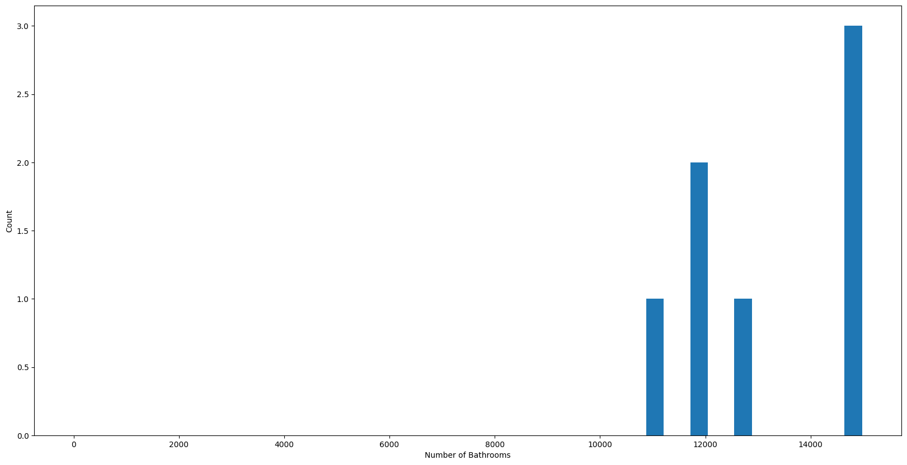

The "Bangalore House Price Prediction Web App" is an innovative project that merges machine learning and web development to provide users with accurate predictions of house prices in Bangalore. Leveraging the Flask web framework, the application offers an intuitive interface where users can input details such as location, square footage, number of bathrooms, and bedrooms. The system processes these inputs using a trained Linear Regression model, extracting insights from historical data patterns to estimate the house price. This unique blend of technologies encapsulates data preprocessing, model integration, and user interaction, resulting in an efficient tool that bridges the gap between complex algorithms and user-friendly interfaces. The project encapsulates the essence of predictive analytics, enabling users to make informed decisions in the real estate domain through an accessible and interactive platform.